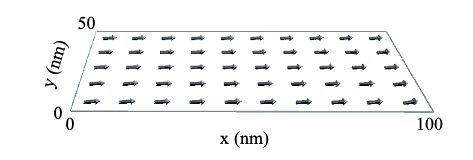
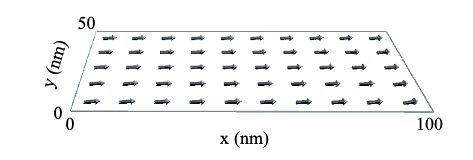

磁性体シミュレーションの研究についての紹介です。


大学4年生の時に行ったインターンシップ先の担当者のその上のプロジェクトリーダーの方に，「絵にできないなら理解しているとは言えない」と言われたことが印象的に覚えています． そして，今も絵（イラスト）として紙にかけるかどうかが，自分がそれを理解できているかどうかの基準となっています．
(C) 2014- 釧路工業高等専門学校 創造工学科 エレクトロニクスコース 機能材料研究室. All rights reserved.
|
磁性体シミュレーションの研究についての紹介です。 |
|
|
−形式知−
 大学4年生の時に行ったインターンシップ先の担当者のその上のプロジェクトリーダーの方に，「絵にできないなら理解しているとは言えない」と言われたことが印象的に覚えています． そして，今も絵（イラスト）として紙にかけるかどうかが，自分がそれを理解できているかどうかの基準となっています． |
|
(C) 2014- 釧路工業高等専門学校 創造工学科 エレクトロニクスコース 機能材料研究室. All rights reserved. |
|